- Калории
- Белки
- Жиры
- Углеводы
Вес порции и КБЖУ в меню пекарни не указаны.
Аллергены по меню:

Зерно, вода, воздух и жар встречаются в руках пекаря. Время и ремесло соединяют их в Panis — хлеб, пятый элемент.
Дарит зерно.
Пробуждает жизнь закваски.
Наполняет тесто.
Завершает превращение.
Мы не используем промышленные дрожжи. Наша закваска — это дикий сад микроорганизмов. Этот симбиоз диких дрожжей и молочнокислых бактерий не только дает хлебу его фирменный профиль — глубокий вкус, невероятный аромат и приятную кислинку, — но и выступает естественным консервантом. Ваш хлеб будет оставаться свежим и мягким без всякой химии.
Длительное брожение — это алхимия вкуса и пользы. Пока тесто медленно созревает, закваска делает сложную работу: она нейтрализует антинутриенты в муке и многократно увеличивает биодоступность витаминов и минералов. В результате хлеб легче усваивается, не вызывает тяжести и дарит долгое чувство сытости, а его вкус становится по-настоящему выразительным.
Мы печем ремесленный хлеб (Artisan). Это значит, что мы доверяем своим рукам и интуиции больше, чем автоматике. Мы не штампуем одинаковые формы. Мы создаем продукт с характером: с темной, хрустящей корочкой-блистером, жевательным мякишем и открытой, ноздреватой структурой. Это хлеб, в котором видна рука мастера.
Хлеб на закваске, слоёная выпечка и десерты. Выбирайте любимое и указывайте вес прямо на карточке.
Пока Мытищи ещё спят, здесь уже пахнет свежим хлебом. Первые буханки отправляются в печь до пяти утра, а тесто для круассанов бережно раскатывают вручную, слой за слоем, на качественном сливочном масле 82,5%.
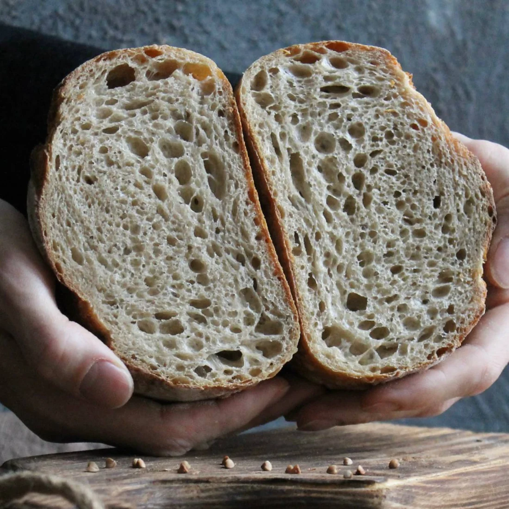
В основе ремесленного хлеба — живая закваска, время и терпение. Тесто медленно созревает, приобретая глубокий аромат, насыщенный вкус и ту самую благородную кислинку. Здесь ценят не идеальные формы, а настоящий характер хлеба, в котором чувствуется рука мастера.
Румяная корочка, которая звонко хрустит при первом надломе. Воздушный, чуть влажный мякиш с красивыми порами. И аромат свежей выпечки, перед которым трудно устоять.
Любимый круассан к сладкой пенке капучино. Хрустящая горбушка, которую делят пополам. Ещё тёплый хлеб к семейному ужину. Простые моменты, ради которых хочется возвращаться.
Здесь у каждого хлеба свой характер, а у каждой корочки — повод улыбнуться.
Заглядывайте за свежим хлебом, любимыми булочками и тем самым круассаном, который сделает обычное утро особенным.
Как растёт тесто, чем пахнет кухня и что сегодня на витрине.
Завтраки, горячее и два вида пиццы из печи. На Сукромке, 5.
Выберите блюдо, чтобы посмотреть фото и состав.
Вес порции и КБЖУ в меню пекарни не указаны.
Аллергены по меню:
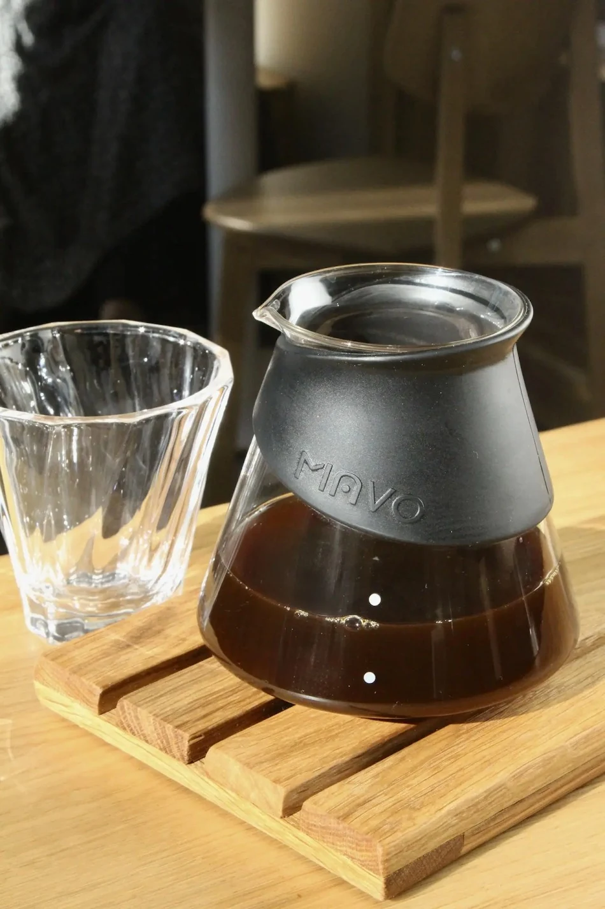
К утренней булочке — короткий эспрессо. К неторопливому завтраку — чашка фильтра или кофе, заваренный вручную в воронке оригами.
Выберите вкус, вес и дату выдачи. Состав и варианты можно посмотреть в карточке ниже.
Панеттоне на закваске, куличи и творожная пасха — к пасхальному столу.

Для своих · Мытищи
Тартин к ужину в ресторане, круассан к первому капучино, свежий хлеб к завтраку в отеле. «Между Нами Булочками» печёт для заведений и магазинов на собственном производстве в Мытищах.
Ассортимент
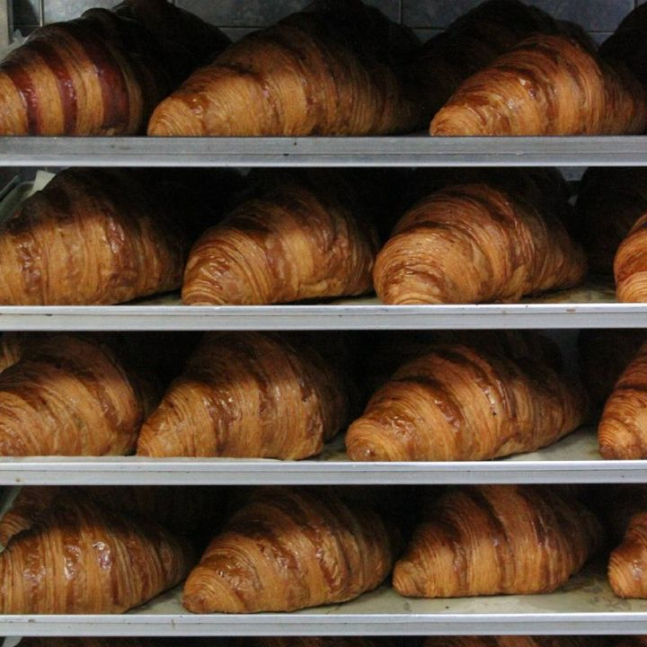
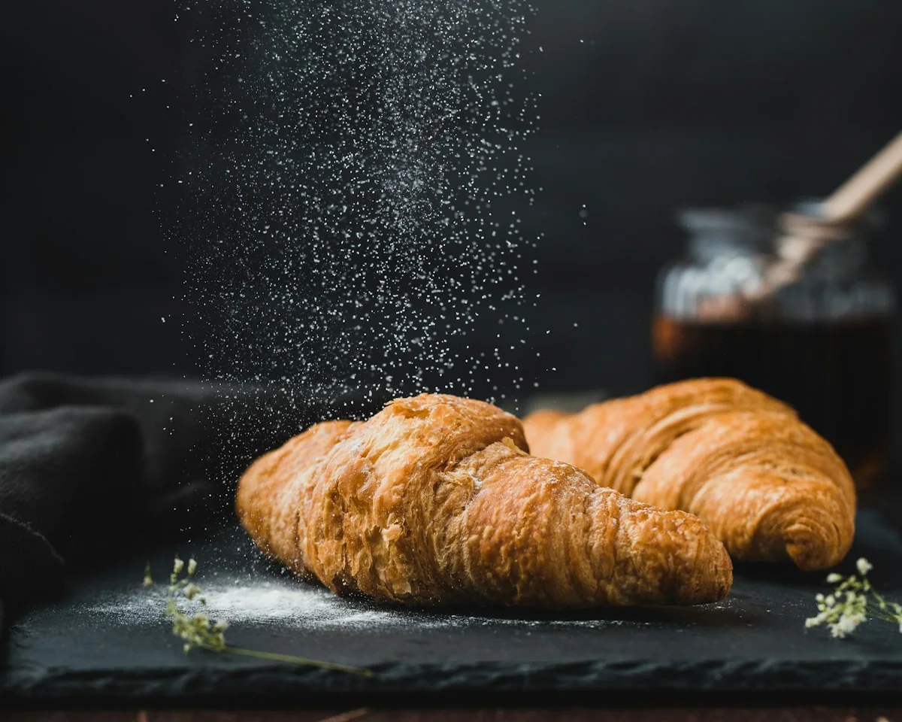
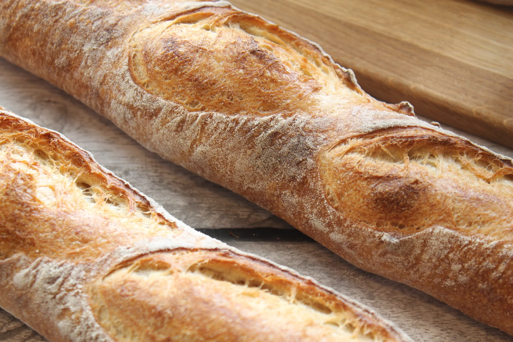
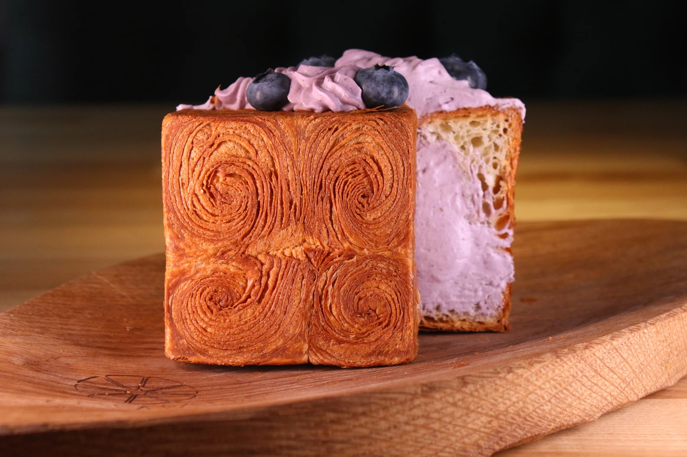
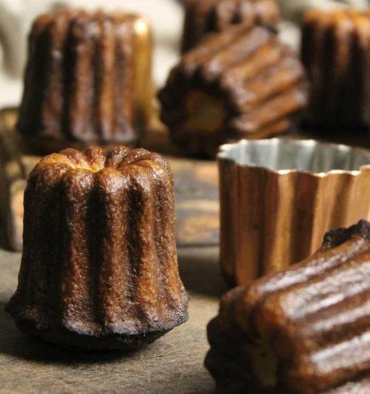
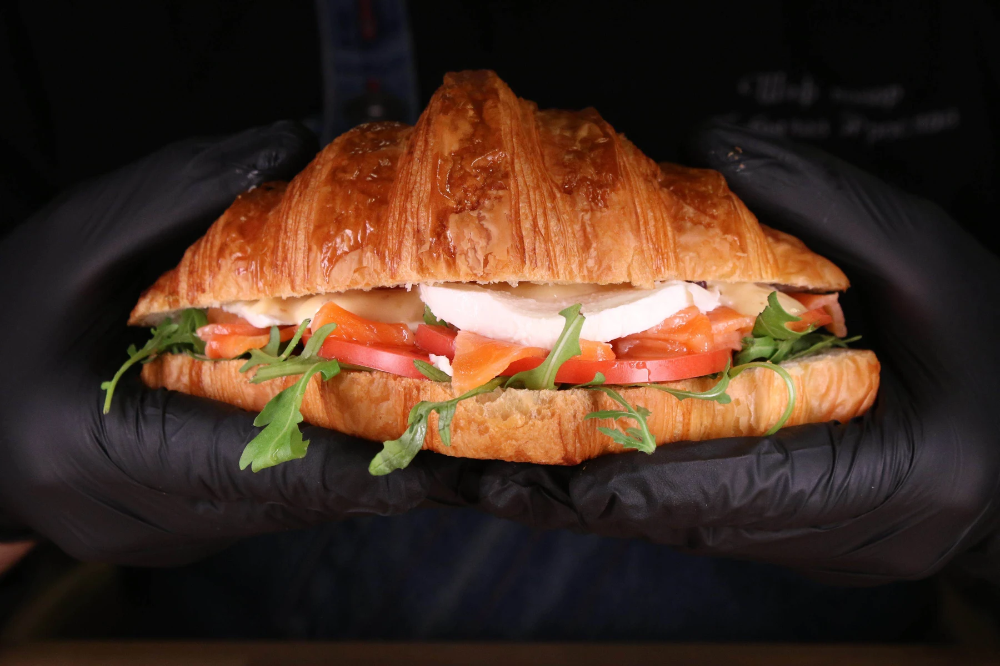


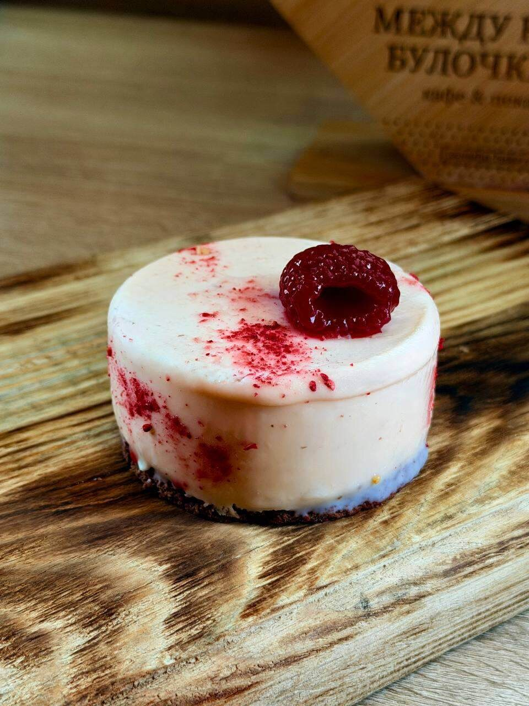
Производство и поставки
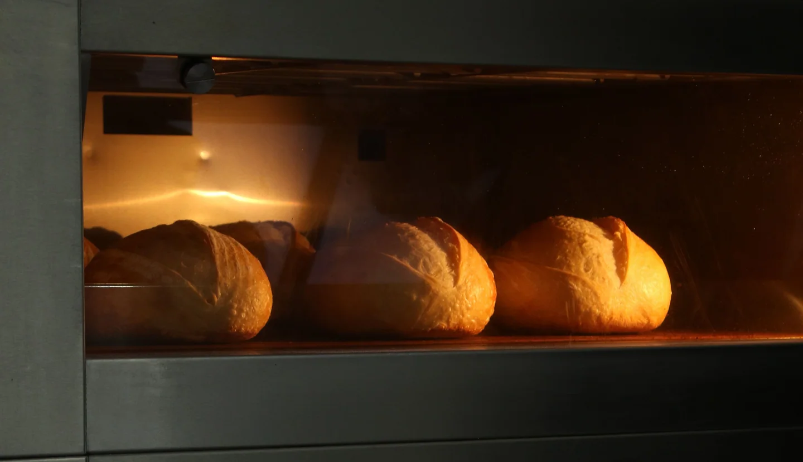
Начало поставок
Укажите формат заведения, адрес и примерный расход. Менеджер предложит позиции и фасовки, уточнит дни доставки, стоимость и документы.
Заказ передают до 13:00 по Москве, минимум за 48 часов до поставки. Например, для пятницы к 10:00 заказ нужен до среды к 10:00.
Уже работаете с пекарней? Оптовый прайс и условия можно запросить напрямую у менеджера в Telegram.
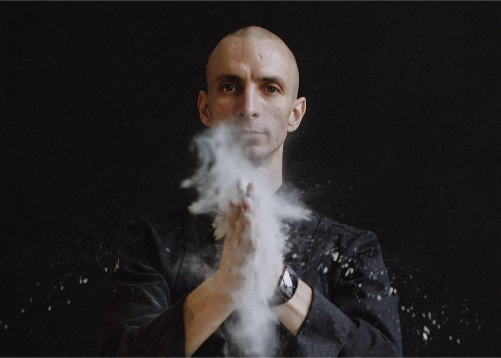
Мне нравится, когда хлеб разламывают руками. Кому-то сразу отдают хрустящую горбушку, кому-то — тёплую серединку. За своим столом помнят, кто что любит.
А тому, кто вернётся домой позже, оставляют его любимый кусочек под полотенцем. Для меня в такой заботе и есть смысл печь хлеб.
Два адреса в Мытищах.
Один повод заглянуть за тёплым хлебом.
Мытищи, ул. Сукромка, д. 5
+7 985 227-05-61Построить маршрут ↗Мытищи, Новомытищинский проспект, д. 64к1
+7 985 227-05-63Построить маршрут ↗